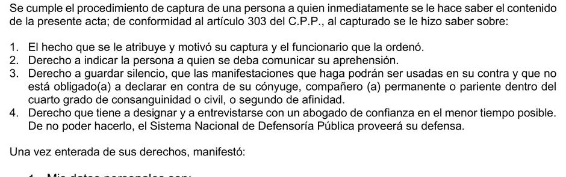

¿Qué es el FPJ-6?
El Acta de Derechos del Capturado (FPJ-6) es el formato en el que se deja constancia de que, al momento de la captura, se le hizo saber al capturado el contenido del artículo 303 del Código de Procedimiento Penal. Su encabezado indica que lo diligencia la Policía Nacional o Judicial en casos de captura. La versión que mostramos es la Versión 03 (aprobada el 26 de julio de 2022), de dos hojas.
Se llena un acta por cada capturado.
Paso a paso, casilla por casilla
El recuadro dorado marca la parte de la hoja oficial que se explica en cada paso. Avanza con los botones, deslizando o con las teclas ← →.
Qué es este formato
El Acta de Derechos del Capturado (FPJ-6) deja constancia de que se le informaron al capturado sus derechos y recoge sus datos personales. Tiene dos hojas y se llena una por cada persona capturada.
Encabezado: NUNC y radicado interno
A la derecha va el NUNC (Número Único de Noticia Criminal), una cifra en cada casilla y por grupos: Dpto., Municipio, Entidad, Unidad Receptora, Año y Consecutivo. A la izquierda, el radicado interno de tu entidad, si lo maneja.
Sugerencia: Escribe el NUNC igual al del FPJ-5: un dígito distinto hace que los formatos no coincidan.
Fecha, hora y lugar
La fecha va por día (D), mes (M) y año (A); la hora, en cuatro casillas (horas y minutos); el lugar, en la línea siguiente. Se anota la hora en que se le leyeron los derechos, porque el artículo 303 dice que se le hacen saber de manera inmediata.
Ejemplo: 15/03/2026, 14:35, Bogotá D.C., CAI Santa Fe
Sugerencia: Que fecha, hora y ciudad coincidan con las del informe de captura (FPJ-5).
Los cuatro derechos (ya impresos)
Este bloque viene impreso y no se llena. Recoge lo que dice el artículo 303: 1. el hecho atribuido y quién ordenó la captura; 2. poder indicar a quién se avisa de la captura; 3. guardar silencio, que lo que diga puede usarse en su contra y que no está obligado a declarar contra su cónyuge, compañero(a) permanente o parientes cercanos; 4. designar abogado de confianza y comunicarse con él cuanto antes o, si no puede, contar con la defensa pública.
Sugerencia: Léelos completos y en voz clara antes de pasar a los datos.
Datos personales (1): identidad
Empieza el punto 1, «Mis datos personales son». Se escriben tal como los da la persona y se comparan con su documento: nombres y apellidos completos e identificación (tipo, número y lugar de expedición). La casilla de nombre identitario es solo para personas trans; si no aplica, queda en blanco.
Ejemplo: Juan Carlos Pérez Gómez · C.C. 10.000.000 de Bogotá
Sugerencia: Copia el nombre y el número tal cual están en el documento.
Datos personales (2): nacimiento y familia
Fecha y lugar de nacimiento, nombre de los padres, estado civil y ocupación u oficio.
Ejemplo: 3 de julio de 1990 · Medellín, Antioquia · Pedro Pérez y Marta Gómez · Soltero · Mecánico
Sugerencia: La fecha de nacimiento debe quedar escrita igual en el FPJ-5, aquí y en la constancia de buen trato.
Datos personales (3): contacto
Dirección y teléfono, correo electrónico y redes sociales.
Ejemplo: Calle 10 # 5-20, barrio Centro · 300 000 0000 · nombre@ejemplo.com
Sugerencia: Si la persona no tiene correo o redes, déjalo sin llenar o anota que no tiene; no lo completes por tu cuenta.
Autoidentificación y «he entendido»
Las preguntas sobre persona LGBTI (SI/NO y ¿CUÁL?), pertenencia étnica (indígena, negro/a, raizal, afrocolombiano, palenquero/a o RROM) y comunidad las responde la persona; se marca o escribe lo que ella diga. Al final, el punto 2 («Que he entendido los derechos leídos») ya viene impreso. Sigue la segunda hoja.
A quién se avisa de la captura
Punto 3, el derecho número 2 del artículo 303. Se escriben nombres, apellidos e identificación de la persona que el capturado indique, su teléfono y la hora en que se le comunicó la captura.
Ejemplo: María Gómez, C.C. 20.000.000 · 310 000 0000 · 14:50
Observaciones
Dos líneas para lo que haga falta dejar constancia. Si no hay nada que anotar, quedan en blanco.
Sugerencia: Si el capturado no quiere firmar, déjalo anotado aquí.
Firmas del acta
A la izquierda, firma y/o huella del capturado (el cuadro es para la huella). A la derecha, dos líneas para nombre, cédula y firma de los servidores.
Constancia de buen trato
Es un texto con espacios para completar. En ella el capturado manifiesta que recibió buen trato físico, psicológico y moral del personal que hizo la captura, y que se le comunicaron y respetaron sus derechos. Repite datos que ya escribiste.
Constancia: lugar, fecha y datos del capturado
Primera línea: ciudad, días, mes, año y hora. Después, «el señor(a)»: nombre completo, documento, fecha de nacimiento, edad y estado civil, iguales a los del punto 1.
Ejemplo: En Bogotá a los 15 días, del mes de marzo del año 2026, siendo las 14:35 horas; el señor Juan Carlos Pérez Gómez, identificado con C.C. 10.000.000, nacido el 3 de julio de 1990, de 35 años, soltero
Sugerencia: Ciudad, fecha y hora deben coincidir con las del FPJ-5.
Constancia: indiciado o imputado, y delito
Hay un espacio junto a «indiciado(a)» y otro junto a «imputado(a)», y una línea después de «del delito de» para el nombre del delito. El texto que sigue («suscribe la presente acta con el fin de manifestar el buen trato…») ya viene impreso.
Sugerencia: Escribe el delito igual que en el FPJ-5. Si dudas cuál de los dos espacios corresponde, consulta el instructivo oficial vigente o a tu fiscal.
Firmas finales
Bajo «En constancia firman:» van la firma y la huella del capturado, y en la línea larga el nombre, código, cargo y firma del fiscal. El aviso del final ya viene impreso: el servidor de policía judicial debe garantizar en todo tiempo la reserva de la información.
Revisión antes de firmar
Antes de firmar comprueba: nombre igual al del documento; fecha de nacimiento igual en las tres partes; ciudad, fecha y hora iguales a las del FPJ-5; firmas del capturado, de los servidores y del fiscal.
Sugerencia: Con CapturaDocs Express estos datos se escriben una sola vez y salen iguales en todos los formatos.
Paso a paso: a mano y con la aplicación
Marca cada paso a medida que avanzas. En cada uno ves cómo es hacerlo a mano y cómo se simplifica con CapturaDocs Express.
- 1
Encabezado y NUNC
A manoCopias el NUNC del informe, con el riesgo de cambiar un dígito.
Con CapturaDocs ExpressSale del mismo caso del FPJ-5, sin copiarlo.
- 2
Datos del capturado
A manoVuelves a escribir nombre, documento, edad y fecha de nacimiento.
Con CapturaDocs ExpressSe toman del caso: no se retipean.
- 3
Los derechos del art. 303
A manoTranscribes o marcas el texto de los derechos.
Con CapturaDocs ExpressEl texto de los derechos ya viene en el formato.
- 4
Constancia de buen trato
A manoRepites nombre, documento y delito para la constancia.
Con CapturaDocs ExpressLa constancia repite los datos exactamente como en el informe.
- 5
Revisar y firmar
A manoVerificas que fecha y hora coincidan con el FPJ-5.
Con CapturaDocs ExpressCoinciden porque se escribieron una sola vez. Imprimes y firmas.
Los cuatro derechos que se informan (art. 303)

Al capturado se le informa de manera inmediata
- El hecho que se le atribuye y motivó su captura, y el funcionario que la ordenó.
- Su derecho a indicar la persona a quien se deba comunicar su aprehensión.
- Su derecho a guardar silencio, que lo que diga podrá usarse en su contra y que no está obligado a declarar contra su cónyuge, compañero permanente o parientes dentro del cuarto grado de consanguinidad o civil, o segundo de afinidad.
- Su derecho a designar y entrevistarse con un abogado de confianza en el menor tiempo posible; si no puede, la defensa la provee el Sistema Nacional de Defensoría Pública.
La palabra clave del artículo es «inmediata». Por eso la hora que escribes en el acta debe corresponder al momento real de la lectura de derechos y coincidir con la del informe FPJ-5.
Los datos personales del capturado
Después de los derechos, el acta dice «una vez enterada de sus derechos, manifestó» y pide los datos personales. Se escriben tal como los entrega la persona y se verifican con su documento:
- Nombre identitario (solo para personas trans): el nombre con el que la persona se identifica, independiente de su nombre legal; así lo aclara el pie de página del formato.
- Nombres y apellidos e identificación, con el tipo y número de documento y el lugar de expedición.
- Fecha y lugar de nacimiento, nombres de los padres, estado civil y ocupación u oficio.
- Dirección y teléfono, correo electrónico y redes sociales.
- Autoidentificación: si se identifica como persona LGBTI y su pertenencia étnica (indígena, negro/a, raizal, afrocolombiano, palenquero/a, rrom) y la comunidad. Son datos de autoidentificación: se pregunta con respeto y se escribe lo que la persona responda.
Cuidado con la fecha de nacimiento: es el dato que más se deja en blanco o se escribe distinto al de otros formatos. En el FPJ-5 se pide la edad y la fecha de nacimiento por casillas; en el FPJ-6 y en la constancia de buen trato se repite. Escríbelo igual en los tres lugares.
La segunda hoja: comunicación, firmas y buen trato
- Que ha entendido los derechos leídos. La persona lo manifiesta.
- La persona a quien desea que se comunique su captura: nombres y apellidos, identificación, teléfono y hora en que se hizo la comunicación (es el derecho número 2 del artículo 303).
- Observaciones, si las hay.
- Firma y huella del capturado y nombre, cédula y firma del servidor.
- Constancia de buen trato: declaración de que la persona recibió buen trato físico, psicológico y moral y de que se le comunicaron y respetaron sus derechos. Lleva ciudad, día, mes, año, hora, datos del capturado, el delito y las firmas del capturado y del fiscal.
La constancia de buen trato repite datos del acta (nombre, documento, edad, estado civil, delito). Si el nombre o el delito no coinciden con los del FPJ-5, el problema salta a la vista.
Consejos para que el acta quede limpia
- Lee los derechos en voz alta y completos y llena el acta en ese momento o apenas sea posible.
- Pregunta el nombre y escríbelo exactamente como aparece en el documento.
- Si la persona no quiere firmar, deja la anotación en observaciones en lugar de dejar el espacio sin explicación.
- Usa la misma ciudad, fecha y hora que en el FPJ-5.
Si quieres ver cómo se conecta con el resto de los documentos, mira la guía de captura en flagrancia.